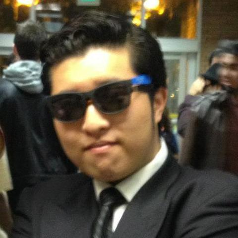
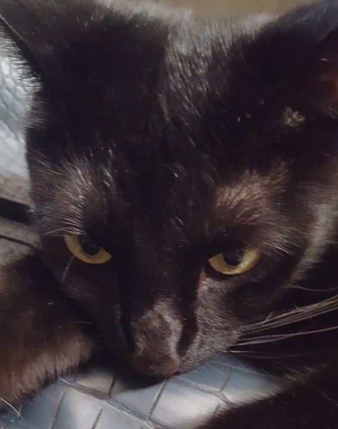

Sentient World Observation and Response Department
Carlo Anacta
Intergallatic Delivery Boy- 
Brandon Chang
Super-visor - 
Jackie Wellons
Head of HR (Hero Relations) 
Wyatt Thomson
Scribe
WHAT WE DO
Herolution was born out of a love for everything Marvel and the idea to be able to find our favorite superheros. Placing superheros in the human element is obviously fun: getting to see and search for them but there's nothing more powerful than extending yourself and becoming a hero through volunteer work. With Herolution, we felt that there was plenty of room for our users to brush up on their Marvel knowledge but what we're doing is creating emotional connections- inspiring the user to be an active hero in their own community.
The app is built around three primary functions: finding a hero, being a hero and finding a sidekick. Each of these elements allows for our user to engage with the platform in different ways.
These functionalities allow you to search for your favorite superhero, adopt a sidekick (like a new puppy!) or find your inner hero and volunteer within your community. Each of these enables you to become your own definition of a hero.
“With great power, comes great responsibility.” – Spiderman